Control Circuit 2026 › Tutorial › Chapter 12
Every electrical circuit usually has terminals: one or more unique termination points that connect two wires together, for great convenience in assembly and maintenance. Control Circuit has Terminal Nodes for this purpose, and they are found on the Tool Palette.
As a control system or panel gets larger we usually start to include many terminal rails: perhaps a common 24VDC and a common 0VDC, Interconnection Wires, mains voltages, external safety signals and more. These rails can grow to many hundreds of terminals per bank, with designations like -X1, -X2 or -XMAIN, where each individual connection point has an index number, like -X1:12 and -X1:13. Just as a good design uniquely identifies every wire, it should uniquely define where each wire is connected to.
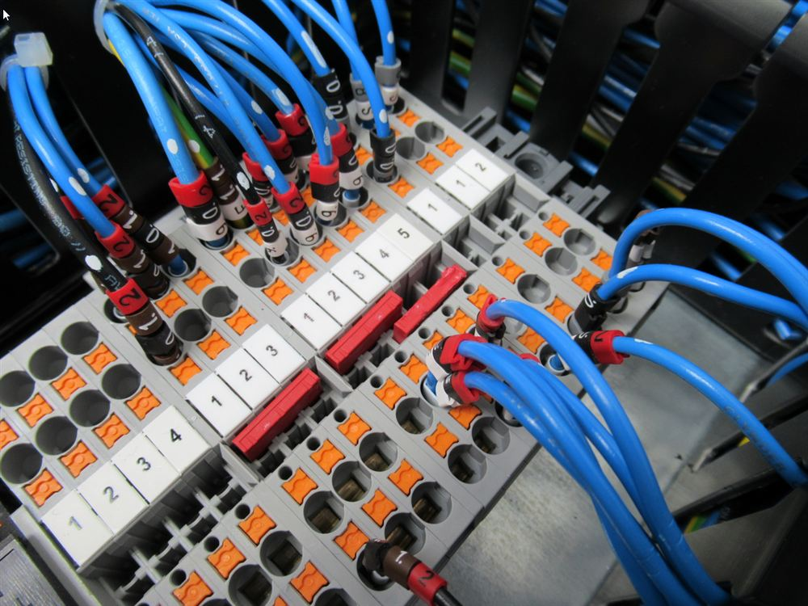
The Terminal function in Control Circuit lets you assign Terminal Groups (the rails), supports optional auto-numbering conventions, and decides whether or not a Terminal acts like a boundary, so that a wire number changes as it passes through that rail. There are many more options besides.
We can readily use Terminal Nodes throughout a condensed circuit design for ease of design, and we can assign those terminals to groups. But what if we want to represent complex or multi-tiered terminal blocks? That is where Terminal Instances come into play.
Essentially, a Terminal Instance starts life as a regular symbol with sufficient Pins to convey the layout and visual representation of the terminal block you need. If we give that symbol a Tag Seed of X and pull it into a circuit Sheet, Control Circuit offers to convert it into a Terminal Instance and, at the same time, assign it to an existing Group.
In this manner, both Terminal Nodes and Terminal Instances can share the same groups, numbering, validation checks and outputs. One example is the Terminal List Form automation, which can be included in your circuit.
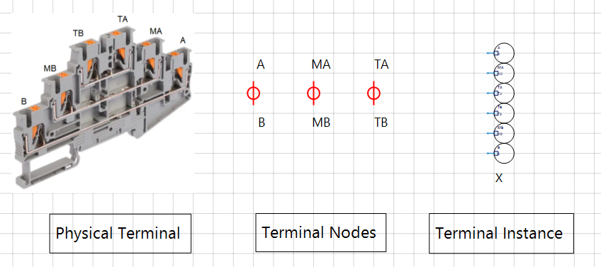
Two words will come up a lot. A pole is one connection point on a terminal block. A tier is a level of the block, usually a pair of poles such as A and B, as you can see in the three-deck block above, where each deck is a tier.
A Terminal Node has just two legs, so it represents one tier. A four pole terminal with two tiers is therefore drawn as two consecutive Terminal Nodes: the first fills tier one, the next fills tier two, and both share one terminal number. A Terminal Instance, on the other hand, is a single symbol that carries every pole of the block in one go.
Whilst we may apply terminal references directly by hand to create our design, you will want the built in Terminal Group Manager if any form of validation and automation is required.
From the Terminals menu choose Manage Terminal Groups…
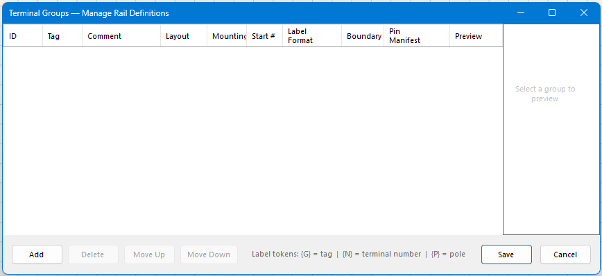
Tap Add to add a new Group, a rail in effect. A new default group appears, and a live drawing of the block is shown on the right.
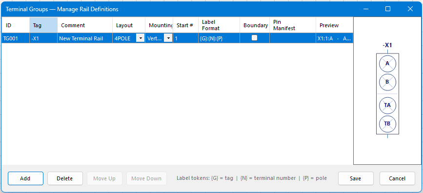
Let’s look at the options in more detail.
Choose the Layout. This is the physical shape of the terminal block as it appears in the real world.
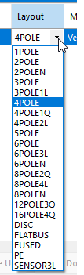
Mounting is Vertical or Horizontal. This is purely for how the Terminal List Form will construct and lay out the terminal list diagram, if you choose later to add such an output to your project. The layout builds an overview of the physical terminals and displays what wires are attached, or none, as the case may be. For example:
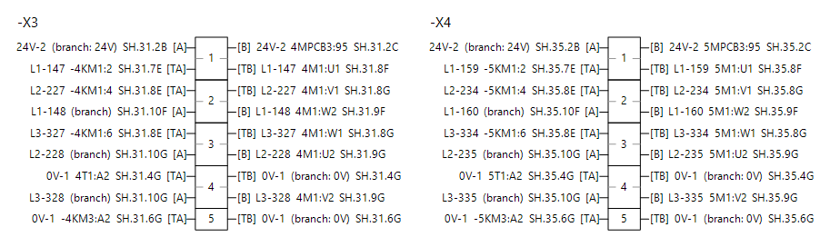
Start # is the index of the first terminal block. If we had three terminals of the four pole variety and Start # was 1, they would be numbered 1, 2 and 3, with each terminal carrying all four of its poles, for example X1:2:A.
The Label Format default is {G}:{N}:{P}, where {G} is the tag, {N} is the terminal number and {P} is the pole.
The Boundary checkbox determines what happens when automatic wire numbering traces a wire to this terminal. Does it pass through and keep the same number, like a flat bus? Or does it increment and take the next number as the wire leaves the other side of the terminal? If the latter, then Boundary is ticked, which would be probable for commoning terminals. Again, this is house convention and yours to decide.
The layout you chose provides the pole names and arrangement by default, but we can change that readily by typing our own Pin Manifest.
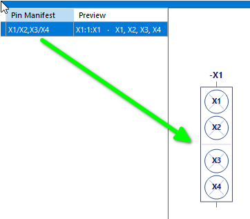
The convention is that poles on the same tier are joined with a /, and tiers are separated by a ,. So X1/X2,X3/X4 describes two tiers of two poles each. Whatever you enter, the graphic updates to show exactly what you have.
This is how a Terminal Node gets its leg texts. We have used the names X1 to X4 here just to make the effect obvious, so you will see them on the Terminal Nodes in the next steps, but A/B, TA/TB and the like are the usual names. A Terminal Instance is different: its pins were named when the symbol was designed, so the manifest has to agree with them, as we see later.
So, we now have a configured -X1 group, and it is a four pole type. Press Save.
Whenever you have done any work with terminals, it is useful to know the overall status of what is what.
Choose Terminals › Validate Terminals, then press the Validate button.
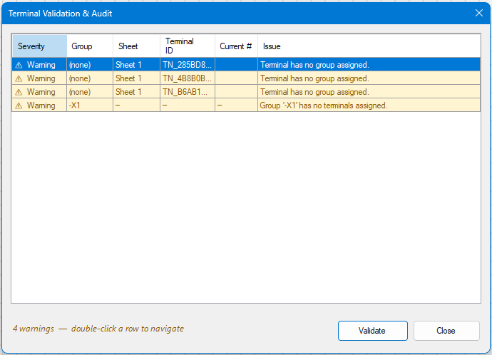
From the messages we can see that three terminals have not been assigned to a group, and in fact -X1 has no terminals assigned either. Double-clicking a row takes you to that terminal. Close the dialog.
If we select the first Terminal Node and look at its properties, we see it has not been assigned.
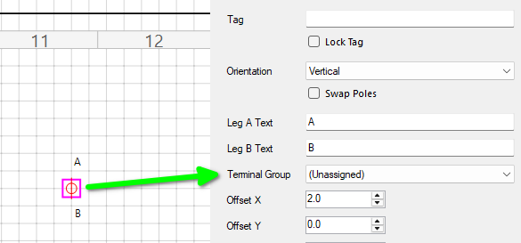
We can change that. Select -X1 as the Terminal Group, then be sure to press Apply Terminal Changes.
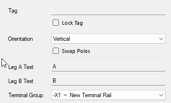
We have two other Terminal Nodes, so we do the same for those.
If we now revalidate the terminals, our messages have changed. The terminals are in the group, but they are unnumbered.
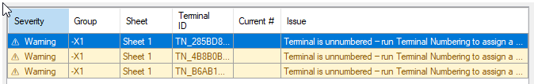
Now choose Terminals › Run Terminal Numbering, then tap Generate Preview. You can limit the run to one Group or leave it on All Groups. The sweep order, which decides the sequence the terminals are numbered in, is set in Project › Project Properties.
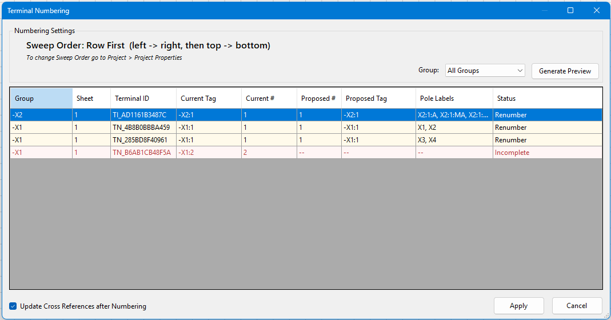
As you see, we have an issue. The last row is shown in red, has no proposed number, and its Status reads Incomplete, followed by the tier it needs. It is simply because we have a four pole configuration, yet we are asking the engine to deal with six poles on the circuit: there is a tier missing. Go ahead and press Apply for now.
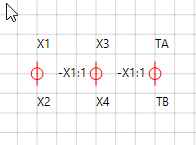
The first two terminals numbered up, but the third did not. The engine is looking for two tiers for every four pole terminal, and we have drawn only one and a half pairs of poles.
Run Validate Terminals again and it tells us exactly what is wrong.
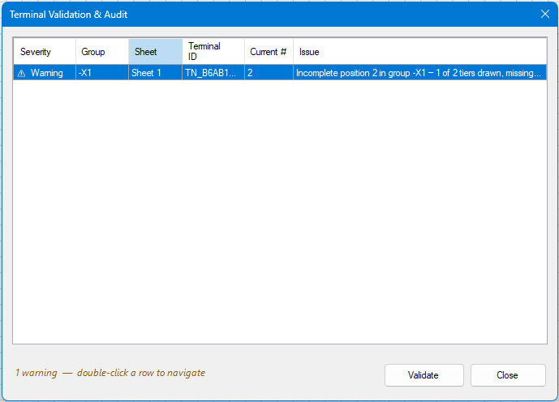
We have drawn only three Terminal Nodes, six poles, so one tier of position 2 is missing, as the Issue says. Let’s add the missing terminal node and run the numbering again.
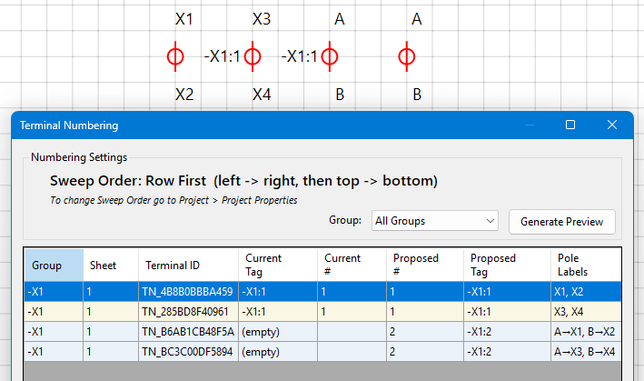
Once applied, all is well.
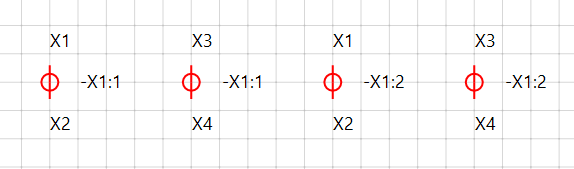
So we have covered the essence of how Terminal Groups and numbering work, hopefully enough insight to give you the gist of things. Next, we will see how to create a Terminal Instance from a symbol and include it in our project.
As mentioned, a Terminal Instance has its legs set by design, so we start with a regular symbol and design them in. The advantage here, by creating a symbol for our required terminal type, is that we can lay out the terminal as a visual representation of the real world device, and for our added convenience, we can also set the direction of the connection Pins to de-clutter our schematic.
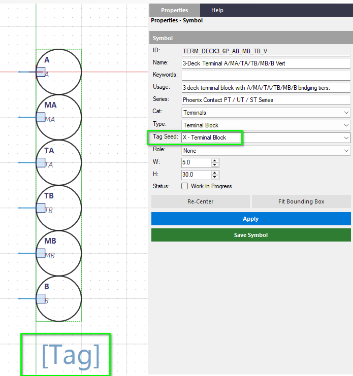
The important parts are that it has a Tag Seed of X and a [Tag] Field present as a minimum. On top of that, it needs the correct number of Pins, with the Pin IDs matching the poles of the Group you expect to use the Terminal Instance with, for example A/B, TA/TB, and so on.
Return to the Sheet editor and select a library with Terminals. The shipped TERMS_BASIC library has some for us, and we will choose a six pole vertical version.
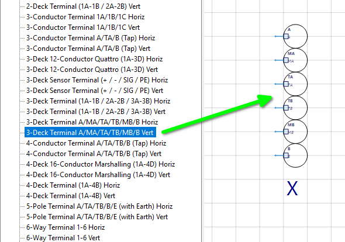
Once on the Sheet, look at its properties and expand the Terminal section if required. The Group is still unselected.
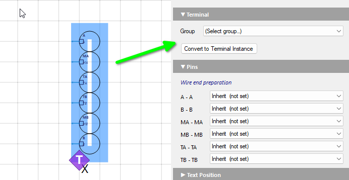
We know we need a six pole Group for this one, so let’s go to the Terminal Group Manager and add one. Just change the Layout to 6POLE. The poles it names are the same as the symbol’s pins, so the Pin Manifest can stay empty.
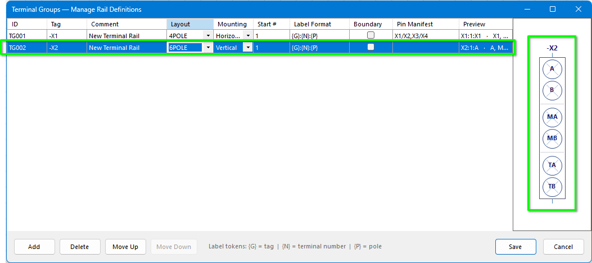
Back in the terminal symbol’s properties, select the -X2 group, then tap Convert to Terminal Instance.
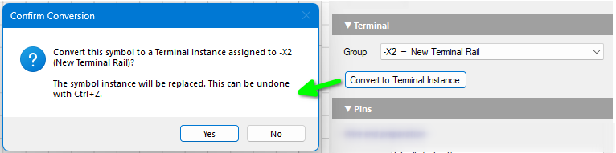
The conversion takes place, and the reference -X2 is immediately applied, although the terminal still needs numbering.
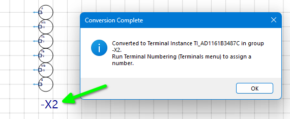
So we run Terminal Numbering once again. The Terminal Instance appears in the same list as the Terminal Nodes.
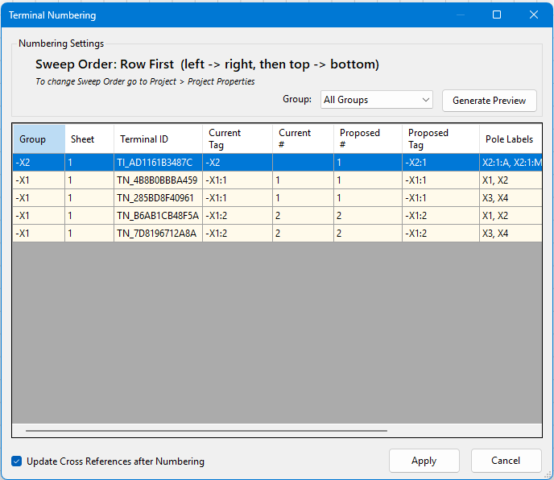
The -X2 six pole terminal is now numbered up.
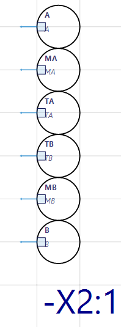
That is a getting started guide for Terminal Groups, Terminal Nodes, Terminal Instances and Terminal Numbering.